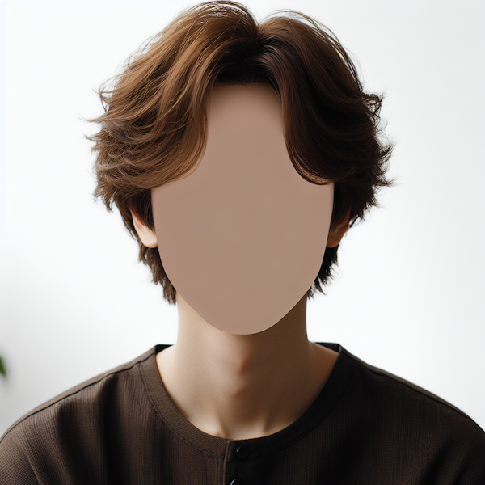

AI Photobooth is like a digital mirror, reflecting how Artificial Intelligence models “see” us.
A face is detected by an AI! You can click the button to capture your likeness.
The face is isolated.
This image is sent to an Large Language Model for a caption.
A caption is returned...
"The photo shows a person with medium-length, light brown hair. They are wearing a brown sweater over a white shirt. The background includes a window with a partially visible white frame and a light-colored wall. The lighting in the room appears soft and indoor, and there is a poster or piece of art visible on the wall behind them."
The caption is sent as a request to an image generator.
An image is returned!
This project arose as I was experimenting with LLMs as a creative collaborator through some critical making experiments. I was curious how AI “sees” us, and whether this would reveal any biases or limitations of the models.
Most often the models will return an “attractive” likeness, often reduced to some standard stereotypes i.e. male = facial hair, long hair = female.
What is most interesting is when the model is unsure or struggles in some way. For example, if the caption expresses the inability to determine some salient features of a person, the image generator will respond with a blank faced person rather than make assumptions.
